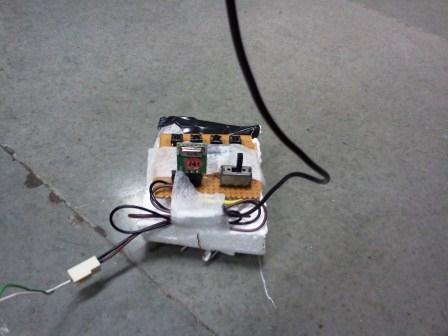
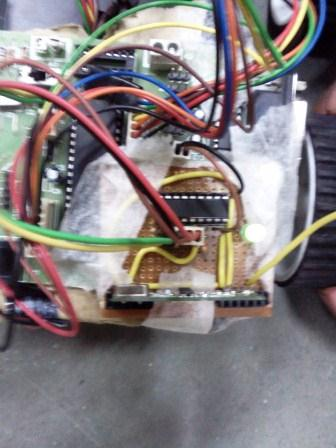

Electronics freak, hardware tinkerer, movie buff, android lover and blogger
One of the projects in the robotics course was to make a Radio Frequency Controlled Robot. It may be also called as remote controlled robot.
So, to achieve this task, I made use of 315 MHz RF transmitter and receiver modules. I used HT12E encoder chip and connected it to 4 push button switches. The data out was connected to the 315 MHz transmitter. The receiver was kept on the robot and was connected to the HT12D decoder chip. The output of the decoder chip was given to the microcontroller.

Using this configuration, the information of the state of the 4 switches was transmitted wirelessly. The microcontroller had a basic code which checks the state of each switch and if pressed does the appropriated action. For eg. pressing sw1 with make robot move forward. sw2 for backward and so on.
You can watch the demo on youtube
